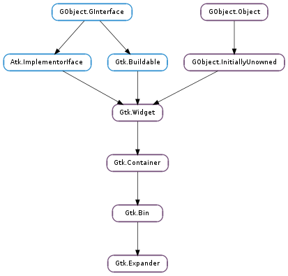

| static | new(label) |
| static | new_with_mnemonic(label) |
| get_expanded() | |
| get_label() | |
| get_label_fill() | |
| get_label_widget() | |
| get_resize_toplevel() | |
| get_spacing() | |
| get_use_markup() | |
| get_use_underline() | |
| set_expanded(expanded) | |
| set_label(label) | |
| set_label_fill(label_fill) | |
| set_label_widget(label_widget) | |
| set_resize_toplevel(resize_toplevel) | |
| set_spacing(spacing) | |
| set_use_markup(use_markup) | |
| set_use_underline(use_underline) |
| Name | Type | Flags | Description |
|---|---|---|---|
| expanded | bool | r/w | Whether the expander has been opened to reveal the child widget |
| label | str | r/w | Text of the expander’s label |
| label-fill | bool | r/w | Whether the label widget should fill all available horizontal space |
| label-widget | Gtk.Widget | r/w | A widget to display in place of the usual expander label |
| resize-toplevel | bool | r/w | Whether the expander will resize the toplevel window upon expanding and collapsing |
| spacing | int | r/w | Space to put between the label and the child |
| use-markup | bool | r/w | The text of the label includes XML markup. See Pango.parse_markup () |
| use-underline | bool | r/w | If set, an underline in the text indicates the next character should be used for the mnemonic accelerator key |
| Name | Parameters | Return | Description |
|---|---|---|---|
| activate |
Bases: Gtk.Bin
A Gtk.Expander allows the user to hide or show its child by clicking on an expander triangle similar to the triangles used in a Gtk.TreeView.
Normally you use an expander as you would use any other descendant of Gtk.Bin ; you create the child widget and use Gtk.Container.add () to add it to the expander. When the expander is toggled, it will take care of showing and hiding the child automatically.
Special Usage
There are situations in which you may prefer to show and hide the expanded widget yourself, such as when you want to actually create the widget at expansion time. In this case, create a Gtk.Expander but do not add a child to it. The expander widget has an Gtk.Expander :expanded property which can be used to monitor its expansion state. You should watch this property with a signal connection as follows:
expander = gtk_expander_new_with_mnemonic ("_More Options");
g_signal_connect (expander, "notify::expanded",
G_CALLBACK (expander_callback), NULL);
...
static void
expander_callback (GObject *object,
GParamSpec *param_spec,
gpointer user_data)
{
GtkExpander *expander;
expander = GTK_EXPANDER (object);
if (gtk_expander_get_expanded (expander))
{
/&ast Show or create widgets &ast/
}
else
{
/&ast Hide or destroy widgets &ast/
}
}
The Gtk.Expander implementation of the Gtk.Buildable interface supports placing a child in the label position by specifying “label” as the “type” attribute of a <child> element. A normal content child can be specified without specifying a <child> type attribute.
A UI definition fragment with Gtk.Expander
<object class="GtkExpander">
<child type="label">
<object class="GtkLabel" id="expander-label" />
</child>
<child>
<object class="GtkEntry" id="expander-content" />
</child>
</object>
| Parameters: | label (str) – the text of the label |
|---|---|
| Returns: | a new Gtk.Expander widget. |
| Return type: | Gtk.Widget |
Creates a new expander using label as the text of the label.
| Parameters: | label (str or None) – the text of the label with an underscore in front of the mnemonic character |
|---|---|
| Returns: | a new Gtk.Expander widget. |
| Return type: | Gtk.Widget |
Creates a new expander using label as the text of the label. If characters in label are preceded by an underscore, they are underlined. If you need a literal underscore character in a label, use ‘__’ (two underscores). The first underlined character represents a keyboard accelerator called a mnemonic. Pressing Alt and that key activates the button.
| Returns: | the current state of the expander |
|---|---|
| Return type: | bool |
Queries a Gtk.Expander and returns its current state. Returns True if the child widget is revealed.
See Gtk.Expander.set_expanded ().
| Returns: | The text of the label widget. This string is owned by the widget and must not be modified or freed. |
|---|---|
| Return type: | str |
Fetches the text from a label widget including any embedded underlines indicating mnemonics and Pango markup, as set by Gtk.Expander.set_label (). If the label text has not been set the return value will be None. This will be the case if you create an empty button with Gtk.Button.new () to use as a container.
Note that this function behaved differently in versions prior to 2.14 and used to return the label text stripped of embedded underlines indicating mnemonics and Pango markup. This problem can be avoided by fetching the label text directly from the label widget.
| Returns: | True if the label widget will fill all available horizontal space |
|---|---|
| Return type: | bool |
Returns whether the label widget will fill all available horizontal space allocated to expander.
| Returns: | the label widget, or None if there is none |
|---|---|
| Return type: | Gtk.Widget |
Retrieves the label widget for the frame. See Gtk.Expander.set_label_widget ().
| Returns: | the “resize toplevel” setting. |
|---|---|
| Return type: | bool |
Returns whether the expander will resize the toplevel widget containing the expander upon resizing and collpasing.
| Returns: | spacing between the expander and child |
|---|---|
| Return type: | int |
Gets the value set by Gtk.Expander.set_spacing ().
| Returns: | True if the label’s text will be parsed for markup |
|---|---|
| Return type: | bool |
Returns whether the label’s text is interpreted as marked up with the Pango text markup language. See Gtk.Expander.set_use_markup ().
| Returns: | True if an embedded underline in the expander label indicates the mnemonic accelerator keys |
|---|---|
| Return type: | bool |
Returns whether an embedded underline in the expander label indicates a mnemonic. See Gtk.Expander.set_use_underline ().
| Parameters: | expanded (bool) – whether the child widget is revealed |
|---|
Sets the state of the expander. Set to True, if you want the child widget to be revealed, and False if you want the child widget to be hidden.
| Parameters: | label (str or None) – a string |
|---|
Sets the text of the label of the expander to label.
This will also clear any previously set labels.
| Parameters: | label_fill (bool) – True if the label should should fill all available horizontal space |
|---|
Sets whether the label widget should fill all available horizontal space allocated to expander.
| Parameters: | label_widget (Gtk.Widget or None) – the new label widget |
|---|
Set the label widget for the expander. This is the widget that will appear embedded alongside the expander arrow.
| Parameters: | resize_toplevel (bool) – whether to resize the toplevel |
|---|
Sets whether the expander will resize the toplevel widget containing the expander upon resizing and collpasing.
| Parameters: | spacing (int) – distance between the expander and child in pixels |
|---|
Sets the spacing field of expander, which is the number of pixels to place between expander and the child.
| Parameters: | use_markup (bool) – True if the label’s text should be parsed for markup |
|---|
Sets whether the text of the label contains markup in Pango’s text markup language. See Gtk.Label.set_markup ().